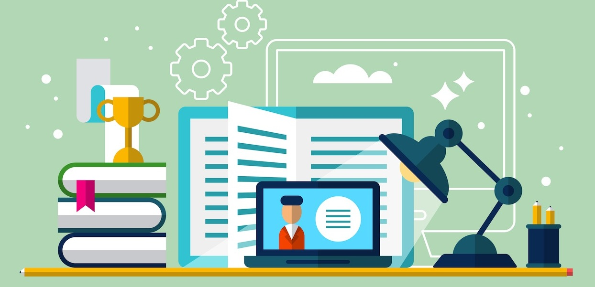
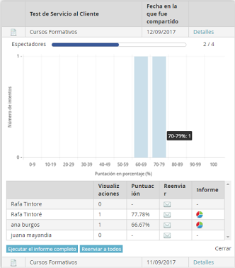
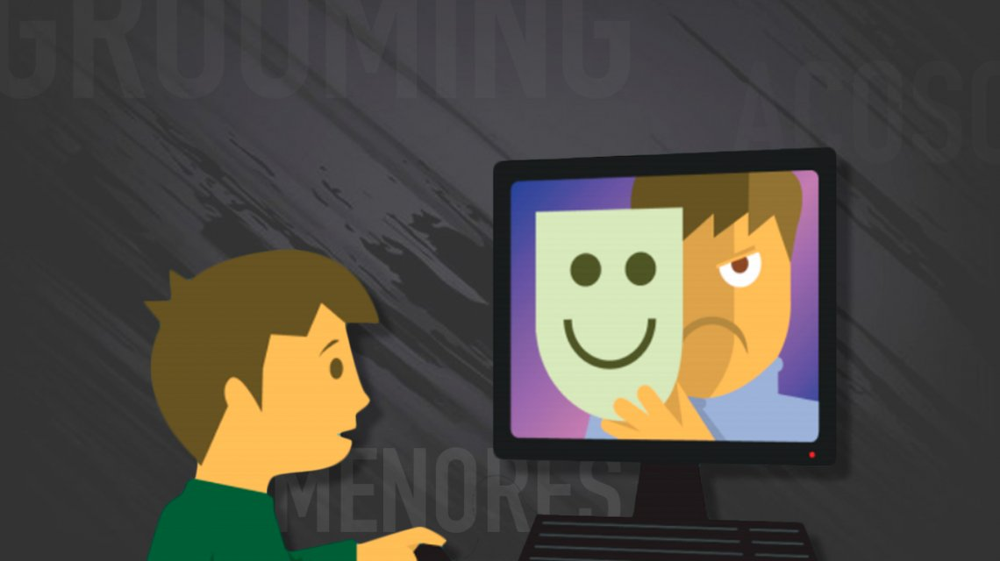
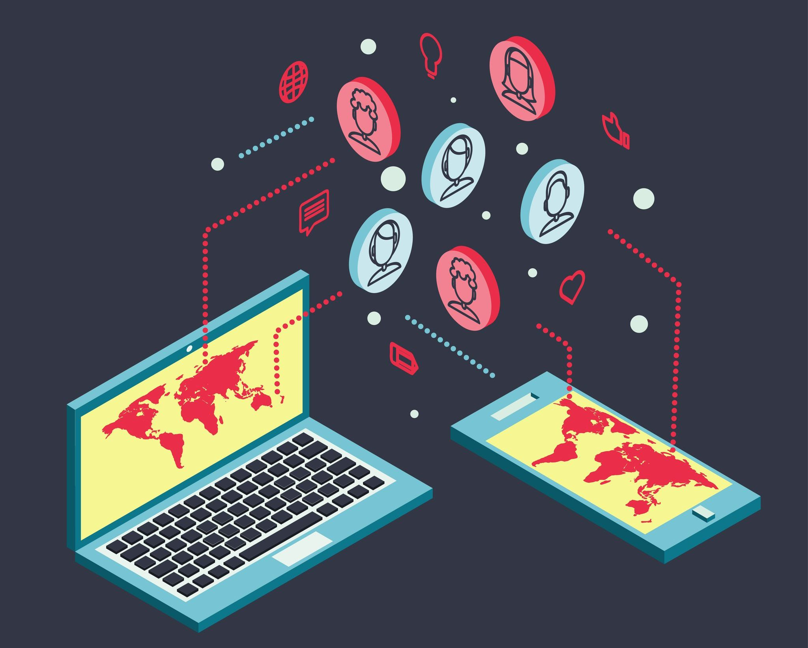
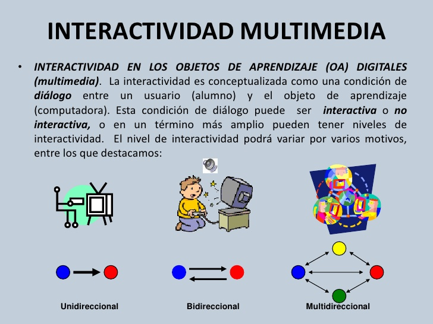
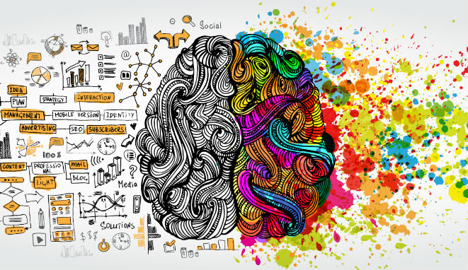

LAS TICS EN LA EDUCACIÓN

¿Que es el las TICs en la educación?
TIC es una sigla que significa Tecnología de la Información y la Comunicación. Últimamente las TICs aparecen en los medios de comunicación, en educación, en páginas web. Son un conjunto de tecnologías aplicadas para proveer a las personas de la información y comunicación a través de medios tecnológicos de última generación.
Las TICs se utilizan cada día por todos nosotros pero el término TIC se ha hecho más extensivo en educación, ONGs y campañas sociales.
Cuando se habla del uso o manejo de las TICs en Educación se refiere al aprovechamiento de estas tecnologías para el mejoramiento de la calidad educativa, así, el uso de internet, proyectores, conexiones en red, videoconferencias, cámaras, ordenadores para procesamiento de datos, libros digitales, etc.
Las TICs se utilizan con frecuencia para referirse también a organizaciones para obtener ayuda solidaria, a mecanismos de promoción social y facilidades de acceso a mecanismos gubernamentales.
Implementación de las TICs en la Educación:
La implementación de las TICs en la educación es un fenómeno que se ha disparado en los últimos diez años – ya es habitual que una escuela o universidad disponga de herramientas de software digital en sus aulas. Nadie pone en duda que se trata de una tendencia en alza, ¿pero realmente se están utilizando de forma adecuada y aprovechando todo su potencial?
Su carácter innovador y tecnológico puede suponer un freno para muchos docentes que no tienen la formación necesaria para aplicarlas en clase, lo que acaba causando un efecto contraproducente en el aprendizaje de los estudiantes. Por fortuna, esto tiene una solución muy sencilla.
Ya no es necesario realizar intensos cursos de formación para saber cómo aprovechar las TICs al máximo; actualmente, su uso es cada vez más sencillo – sólo necesitas una pequeña guía y algo de asesoramiento personalizado para ser capaz de aplicar las TICs en clase de la forma más enriquecedora y amena posible. En GoConqr llevamos varios años ayudando a profesores y estudiantes a crear mejores prácticas de aprendizaje digital, por lo que desde nuestra experiencia ofrecemos una breve (pero completa) guía con todos los puntos clave sobre cómo y por qué aplicar las TICs en el aula.
¿Las TICs en los ambitos educativos?
odo el mundo tiene claro que las TICs tienen una infinidad de beneficios tanto para profesores cómo para estudiantes, ¿pero cuáles son exactamente? A veces pueden resultar un tanto ambiguos y poco específicos, especialmente si no has tenido experiencia utilizándolos anteriormente. Por lo tanto, procedemos a detallar de forma específica cuáles son sus principales beneficios.
#1 Facilitan la Evaluación y el Control Personalizado
El proceso de corregir exámenes puede llegar a resultar muy engorroso y lento, especialmente para los profesores que imparten diferentes asignaturas. Si bien es cierto que es necesario revisar personalmente cada examen, con la implementación de las TICs en el aula el sistema de evaluación es más accesible y rápido que nunca.
por ejemplo, puedes enviar de forma personalizada un test a un alumno para que lo complete sin tener que iniciar sesión o registrarse en la plataforma. Una vez lo termina, sus resultados llegan de forma instantánea al ordenador del docente, indicándole todos los errores que ha cometido y la nota final. Además, esta herramienta también señala cuando lo ha completado y cuánto ha tardado; es decir, otorga al docente un control total del proceso evaluativo.
#2 Desarrollo de la Iniciativa Mediante la Interactividad
Tener iniciativa es una de las características que más se valora en un profesional en cualquier empresa – la capacidad para llevar el mando, proponer ideas y resaltar por encima del resto puede marcar una diferencia en el mundo laboral. Si bien es cierto que hay ciertas personas que tienen más facilidad para esto que otras, se trata de algo que se puede trabajar e ir perfeccionando.
En las plataformas e-learning como GoConqr, los estudiantes tienen total autonomía para crear recursos propios cómo mapas mentales, diapositivas, diagramas de flujo, tests, apuntes y notas, entre otros. Es decir, el docente proporciona un espacio en el que sus estudiantes tienen absoluta libertad -siempre bajo unas directrices y asesoramiento- para fomentar su creatividad, desarrollar su capacidad para crear contenidos desde cero y proponer ideas para las clases.
#3 Fomentar el Aprendizaje Colaborativo y el Trabajo en Grupo
La capacidad de trabajar en equipo y ser capaz de llegar a acuerdos con los demás para incrementar la productividad global y alcanzar los objetivos marcados es una de las virtudes más poderosas que una persona puede tener. Por muy inteligente que seas, si no eres capaz de realizar trabajos en grupo eficientemente, no tendrás tantas oportunidades en el mercado laboral a largo plazo.
Los grupos de estudio en línea son una oportunidad maravillosa para que los estudiantes interactúen entre ellos, intercambien experiencias, abran debates y aporten ideas. Es una herramienta que fomenta la cooperación para encontrar soluciones a los problemas, ya que ofreces a los alumnos un espacio virtual en el que pueden compartir toda la información que deseen y ayudarse mutuamente para resolver sus dudas.
#4 Flujo de Comunicación Fluido con los Estudiantes
Ya sea mediante chats privados, envíos de correos o publicaciones en los grupos, la implementación de las TICs en la educación ha supuesto una mejora exponencial de la comunicación de los profesores con sus alumnos (y los familiares de los alumnos). Antaño, una vez los estudiantes dejaban el aula resultaba muy difícil conectarse con ellos; en cambio, hoy en día se les puede enviar un mensaje en cuestión de segundos.
Evidentemente, esta herramienta debe gestionarse con empatía y prudencia – no puedes estar constantemente bombardeando a los alumnos con mensajes y notificaciones, ya que eso les causaría (con razón) irritación y cansancio. En cambio, si tus envíos son relevantes y centrados en ayudar al alumno, estarás enriqueciendo y facilitando su proceso de aprendizaje.
#6 Liberación de las Tareas Más Mundanas y Rutinarias
Es típica la imagen del profesor con miles de carpetas repletas de apuntes, notas, dosieres y cuadernos con todos los contenidos de la asignatura y datos de sus alumnos. Se trataba de algo muy pesado que con la implementación de las TICs en la educación ya no es necesario; las herramientas de software permiten almacenar en la nube todo esa información que antes tenías que llevar a mano.
de la asignatura y datos de sus alumnos. Se trataba de algo muy pesado que con la implementación de las TICs en la educación ya no es necesario; las herramientas de software permiten almacenar en la nube todo esa información que antes tenías que llevar a mano.
No solo eso, sino que con GoConqr puedes publicar tus contenidos de aprendizaje en la librería y ganar dinero con ellos si alguno de los usuarios desea adquirirlo. Es decir, en vez de tener el contenido que has creado guardado en una carpeta sin darle uso, ahora puedes sacar beneficios económicos por él.
¿Importancia de Las TICs en la educación?
En la actualidad los sistemas educativos de todo el mundo se enfrentan al desafío de utilizar las tecnologías de la información y la comunicación para proveer a sus alumnos/as con las herramientas y conocimientos necesarios que se requieren en el siglo XXI. Las TICs son la innovación educativa del momento y permiten a los docentes y al alumnado cambios determinantes en el quehacer diario del aula y en el proceso de enseñanza-aprendizaje de los mismos. Las (TICs), están transformando la educación notablemente, ha cambiado tanto la forma de enseñar como la forma de aprender y por supuesto el rol del docente y el estudiante.
¿Ventajas de Las TICs?
- MOTIVACIÓN. El alumno/a se encontrará más motivado utilizando las herramientas TICs, pues esto permite al estudiante aprender de una forma más atractiva, divertida, etc.
- INTERÉS. Los recursos de animaciones, vídeos, audio, gráficos, textos y ejercicios interactivos que refuerzan la comprensión multimedia presentes en Internet aumentan el interés del alumnado complementando la oferta de contenidos tradicionales.
- El alumno/a puede interactuar, puede comunicarse o puede intercambiar experiencias con otros compañeros del aula, del Centro o bien de otros Centros educativos enriqueciendo en gran medida su aprendizaje. Los estudios revelan que la interactividad favorece un proceso de enseñanza y aprendizaje más dinámico y didáctico.
- COOPERACIÓN. Las TICs posibilitan el proceso de realización de experiencias, trabajos o proyectos en común. Y no sólo entre alumnos/as, sino también en colaboración con el docente
- INICIATIVA Y CREATIVIDAD. El desarrollo de la iniciativa del alumno/a, el desarrollo de su imaginación y el aprendizaje por sí mismo/a.
- AUTONOMÍA. Con la llegada de las TICs y la ayuda de Internet el alumno/a dispone de infinito número de canales y gran cantidad de información, lo que puede fomentar la autonomía del alumno a la hora de buscar información, aprender a seleccionarla, etc.
- ALFABETIZACIÓN DIGITAL Y AUDIOVISUAL. Se favorece el proceso de adquisición de los conocimientos necesarios para conocer y utilizar adecuadamente las TICs.
UN POCO MAS SOBRE LAS VENTAJAS Y DESVENTAJAS
Ventajas y Desventajas
¿Riesgos de Las TICs?
Acceso a contenidos inadecuados
Al ingresar a Internet los niños, niñas y adolescentes pueden acceder de manera voluntaria e involuntaria a materiales nocivos e inadecuados para su edad, desde contenidos violentos a contenidos de sexo explícito o pornográfico.
Estos materiales impactan directamente en su desarrollo, debido a que se ven influidos profundamente por lo que presencian y experimentan, derivando en situaciones no deseadas o violentas.
Además, no solo pueden estar expuestos a este material sino que ellos mismos pueden verse involucrados en la producción del mismo, tomando fotografías o videos que luego comparten vía Internet.
Cyberbullying o Ciberacoso
Es una forma de violencia muy común entre los niños, niñas y adolescentes y de preocupación nacional e internacional, actualmente.
Se trata de la intimidación, del acoso psicológico y la humillación entre pares a través de Internet, ya sea creando páginas web especiales para agredir a un compañero/a, armando grupos en la redes con la finalidad de burla u ofensa, enviando mensajes amenazadores o intimidatorios, entre otros ejemplos. Este tipo de violencia tiene siempre continuidad en el tiempo y el impacto psicológico sobre el niño o joven agredido es muy importante.
Los padres deben estar atentos a signos de alarma en el comportamiento de un hijo o hija que pudiera estar indicando un acoso de este tipo.
Grooming o preparación en línea por parte de adultos
Existen adultos que utilizan Internet para contactar niños, niñas y adolescentes con la finalidad del abuso. Estos accionan con paciencia y desde identidades falsas incitando a los chicos y jóvenes para que sean sus amigos, para ganarse su confianza y pedirles información comprometedora, como imágenes, videos o datos personales, para luego amenazarlos y que así participen de situaciones de tipo sexual virtualmente e incluso en el espacio físico, llevándolos a encuentros presenciales. Esta situación no ocurre de un día para el otro, sino que el abusador se gana la confianza del niño primero, para abusarlo posteriormente.
Los padres deben alertar a los chicos y chicas sobre la importancia de no mantener diálogos por chat con adultos que no son de su entorno cercano, que no concurran a citas con personas que conocen a través de Internet y que siempre cuenten con su apoyo cuando sientan que una situación no es segura o les crea dudas.

Uso excesivo de la tecnología
El uso excesivo de la tecnología se convierte en un riesgo cuando esto conlleva otras conductas asociadas: aislamiento social o familiar, falta de descanso nocturno, falta de dedicación al estudio y a las responsabilidades asumidas, pérdida de noción del tiempo, entre otras consecuencias.
Por este motivo, elaborar pautas de uso de las tecnologías colabora en ordenar la disponibilidad y el uso de las mismas, tanto en el hogar como en la escuela. En casa es recomendable llegar a estas pautas de modo conjunto con los chicos, para favorecer que se cumplan, aún si los padres no están presentes.
Sexting
Con los celulares o con simples cámaras, los niños, niñas y adolescentes pueden filmar o fotografiarse en situaciones que comprometen su intimidad o la de amigos o amigas.
Tomarse fotos en actitudes provocativas, semidesnudos, desnudos, en situaciones de pareja u otras cuestiones que tienen que ver con su intimidad, no deben ser compartidos.
Estos contenidos, al ser enviados por ellos mismos a novios, novias, amigos o amigas, pasan de la intimidad a lo público, y de esta manera, pierden el control sobre lo que han enviado. A través de las redes y los dispositivos, con suma rapidez, un contenido se comparte o es publicado en la web.
De esta manera, muchos adolescentes se encuentran en situaciones que no habían imaginado y que los perjudican, por no haber asumido una actitud responsable a la hora de tomar esas imágenes y compartirlas.
Exposición de datos personales
Al momento de registrarse en una página web, en una red social o al chatear, los niños, niñas y adolescentes ingresan datos personales como el nombre completo, edad, número de teléfono, dirección de casa, colegio en el que estudian, envían imágenes e información personal.
El acompañamiento del adulto debe orientarse en ayudar al niño a configurar su privacidad de manera de que interactúe solo con sus amigos, o sea aquellos que ha aceptado en su red social porque los conoce o tiene referencias de ellos a través de otros amigos.
Con los adolescentes, es importante dialogar con ellos sobre si han reparado en la configuración de su privacidad, si saben cómo hacerlo, y qué criterios deben adoptar para proteger sus datos personales. También resaltar que las fotos y los videos tanto propios como de amigos, son “datos personales” que necesitan preservar y no hacer públicos en la web.
Beneficios de las TICs en la educación
Además de suponer una herramienta útil para los profesores en cuanto a búsqueda y presentación de la información, las TIC han resultado ser sumamente beneficiosas de cara a los procesos de aprendizaje y motivación de los alumnos.
1. Potencial aumento del interés por ciertas materias
Existen ciertas materias que suelen despertar menos interés en los alumnos que otras, este hecho puede provocar algo de frustración en los profesores, los cuales en ocasiones se quedan sin recursos para despertar esta fascinación en los alumnos.
No obstante, gracias a herramientas como animaciones, vídeos o ejercicios multimedia, los alumnos pueden ver aumentado su interés con las consiguientes repercusiones positivas que esto conlleva.
2. Aumento de la motivación
Tal y como se comentaba anteriormente, en las nuevas generaciones la utilización de nuevas tecnologías está a la orden del día, por lo que aquellos ámbitos en los que no las encuentran pueden resultarles desmotivadores.
Por lo tanto, la utilización de las TIC en las escuelas puede significar un aumento de la motivación, puesto que se ofrece una forma de aprender en sintonía con sus costumbres y aficiones. La utilización de herramientas digitales puede suponer una nueva forma de aprender de manera atractiva, sencilla y divertida.
3. Facilita la comunicación
Gracias a las nuevas tecnologías, la comunicación entre alumnos y profesor puede ser mucho más fácil y accesible. Tradicionalmente, el alumno ha ejercido un papel pasivo en este sentido; sin embargo, gracias a las posibilidades que ofrecen los chats o los correos electrónicos pueden ser útiles para la resolución de dudas, para compartir ideas y contenido, etc.

4. Fomenta la cooperación
Las nuevas tecnologías pueden proveer de un espacio digital común que promueva la cooperación no solo entre los alumnos como una herramienta para trabajar en grupo, sino también para que el cuerpo docente pueda compartir conocimientos, experiencias y cooperar entre ellos.
5. Interactividad
Una gran cantidad de estudios realizados en el ámbito escolar han demostrado que la interactividad entre los alumnos potencia los procesos de aprendizaje. Por lo tanto, si utilizamos las TIC como una herramienta más de comunicación e intercambio de ideas entre los alumnos fomentaremos los procesos de reflexión.

6. Mayor autonomía
Debido al amplio abanico de información que se puede conseguir con la implantación de las TIC en las escuelas, los alumnos pueden ser capaces de escoger y decidir qué asuntos o materias les provocan mayor curiosidad y aumentar estos contenidos mediante la búsqueda y selección de información.
Esto significa una mayor capacidad de decisión y la potenciación de la autonomía del alumno.
7. Actividad intelectual continua
Todas las ventajas o beneficios que se ha descrito anteriormente tienen como consecuencia directa la continua actividad intelectual de alumnos. Es decir, las TIC potencian el pensamiento continuo y consciente de este, así como el desarrollo cognitivo.
8. Potencia la iniciativa y la creatividad
Además y como consecuencia a todo lo anterior, el buen uso de las TIC fomenta el desarrollo de la creatividad y la toma de iniciativa, puesto que alumnos desarrolla nuevas habilidades que le permiten aprender por sí mismo.

9. Permite la alfabetización digital y audiovisual
Mediante la propia utilización las TIC se promueve el aprendizaje y el desarrollo de las habilidades necesarias para desenvolverse en la nueva era digital en la que estamos entrando.